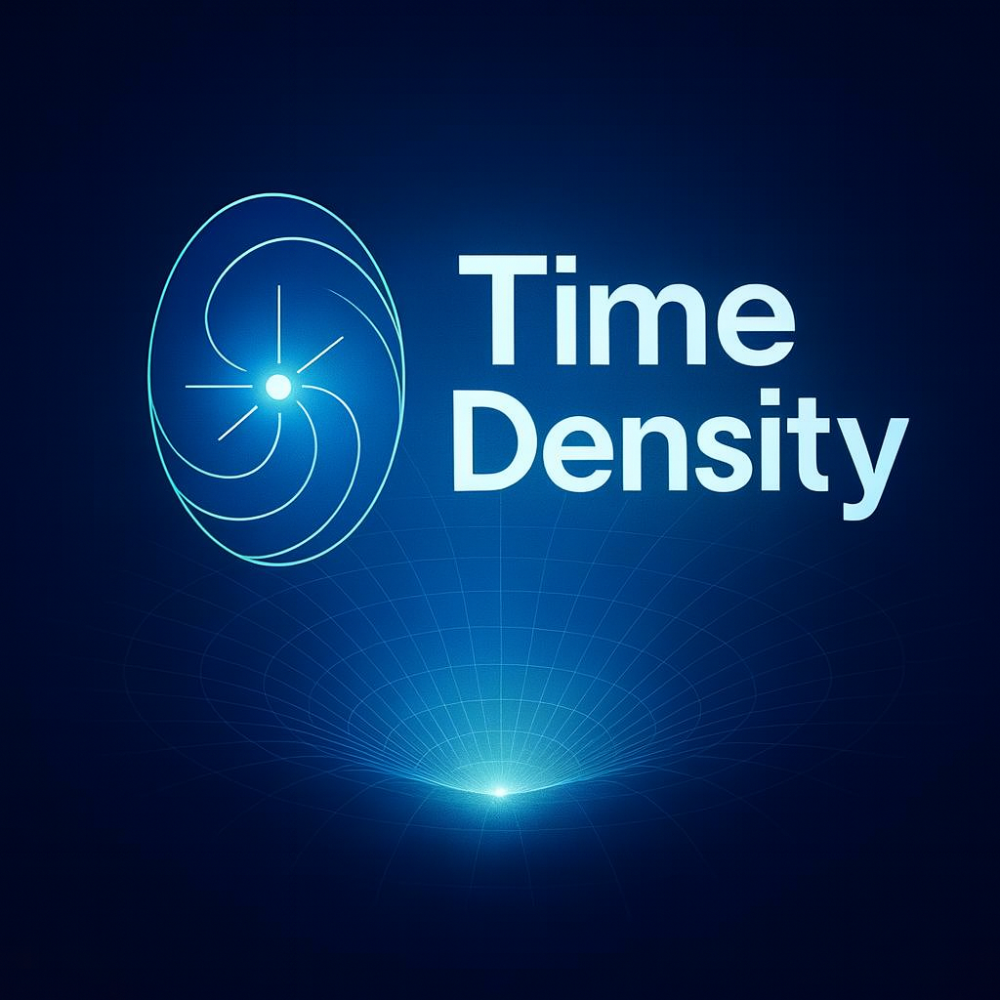

TimeDensityЛичность развивается через углубление в собственное поле, синхронизацию частот с другими людьми и внутреннее напряжение, которое кристаллизует ядро. Когда ядро теряет плотность, человек попадает в ложные временные поля — чужие ритмы, ожидания и навязанные смыслы.
Истина по своей природе чиста. Зашумлён не источник, а приёмник — человеческое сознание. В современном мире сознание перегружено чужими мнениями, страхами и сравнениями. Мы часто проверяем не саму идею, а собственное недоверие.
Настоящая истина проявляется только при высокой плотности внимания, когда сознание достаточно тихо и открыто.
Вселенная представляет собой единое поле плотности времени. Материя — это устойчивые узлы времени, пространство — его геометрия, галактики — гигантские вихри плотности, а расширение Вселенной — естественное снижение средней плотности времени.
На уровне цивилизации мы наблюдаем глобальную рассинхронизацию временных полей: внешние ритмы подавили внутренние, скорость вытеснила глубину, а шум заглушил исходный код миллионов людей. Это и есть коренная причина современных кризисов, конфликтов и потери смыслов.
Плотное всегда сильнее рыхлого. Правильные структуры времени неизбежно находят друг друга через резонанс.
TimeDensity показывает главное: мы не создаём себя, свои идеи и своё будущее заново. Мы просто возвращаемся к своей изначальной структуре — к тому естественному ритму и плотности, которые уже существуют внутри нас и во всей Вселенной. В этом возвращении и заключается ключ к пониманию себя, рождения идей и гармонии с миром.